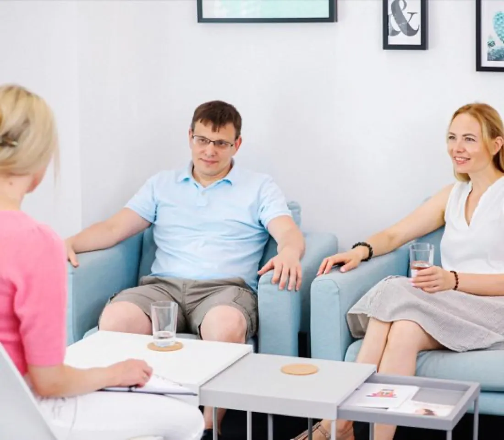

Wenn Nähe verloren geht – und ihr euch wiederfinden möchtet.
Manchmal liebt man sich noch – und fühlt sich trotzdem immer weiter voneinander entfernt.
Aus kleinen Dingen werden Streitigkeiten. Aus unausgesprochenen Gefühlen entstehen Vorwürfe. Man fühlt sich nicht gesehen, nicht verstanden oder nicht mehr wichtig.
Es geht nicht nur darum, miteinander zu reden.
Viele Paare können stundenlang über ihre Probleme sprechen. Sie wissen vielleicht sogar ganz genau, worüber sie streiten – aber nicht, warum es sie emotional immer wieder so stark trifft. Genau dort setze ich an.
Ich begleite euch dorthin, wo eure Gefühle euch etwas zeigen möchten:
Wenn wir diese Gefühle wirklich verstehen und erleben, können neue Erkenntnisse entstehen. Und genau daraus kann Veränderung entstehen.
Eine Situation heute kann ein Gefühl auslösen, das viel älter ist.
Oft reagiert ein Mensch in einer Beziehung nicht nur auf das, was gerade passiert. Plötzlich fühlt man sich wieder:
Im Coaching schauen wir nicht nur auf das aktuelle Problem – wir gehen gemeinsam zu dem Gefühl, das dahinterliegt. Dort können neue Zusammenhänge sichtbar werden.
Und wenn sich innerlich etwas verändert, verändert sich häufig auch der Blick auf den Partner – und damit die gesamte Dynamik zwischen euch.

Nicht nur über Gefühle sprechen – Gefühle verstehen.
Meine Arbeit ist anders als ein klassisches Paargespräch. Ich gebe euch keine fertigen Lösungen und sage euch nicht, was ihr tun müsst.
Stattdessen begleite ich euch mit gezielten psycho-emotionalen Techniken. Ihr lernt, eure eigenen Gefühle bewusster wahrzunehmen – und die Botschaft dahinter zu verstehen.
Über dieses Erleben können neue Erkenntnisse entstehen – und daraus neue Möglichkeiten, miteinander umzugehen.
Vielleicht möchtet ihr …
… wieder miteinander sprechen, ohne dass jedes Gespräch im Streit endet. Wieder Nähe spüren. Verstehen, warum ihr euch immer wieder an denselben Punkten verletzt. Oder ihr steht bereits an einem Punkt, an dem ihr über Trennung nachdenkt – und möchtet herausfinden, was wirklich dahintersteht.
Im Coaching kann es zum Beispiel um folgende Themen gehen:
Eine erfüllte Beziehung bedeutet nicht, dass es niemals Konflikte gibt.
Es bedeutet, dass ihr euch auch in schwierigen Momenten wieder erreichen könnt – und dass ihr den Menschen hinter der Reaktion sehen könnt.
Manchmal kommen Paare zu mir, weil sie Klarheit brauchen.
Nicht, weil sie ihre Beziehung unbedingt retten möchten. Vielleicht habt ihr euch bereits entschieden, getrennte Wege zu gehen. Auch dann kann ein Coaching wertvoll sein – besonders, wenn Kinder betroffen sind.
Denn eine respektvolle Kommunikation und ein bewusster Umgang miteinander können auch nach einer Trennung einen großen Unterschied machen.
Lasst uns gemeinsam herausfinden, was hinter eurem Konflikt steckt.
Ihr müsst beim ersten Gespräch noch keine Lösung haben. Ihr müsst auch nicht wissen, ob eure Beziehung gerettet werden kann. Ihr müsst nur bereit sein, ehrlich hinzuschauen.
In einem kostenlosen Erstgespräch sprechen wir über eure Situation und schauen gemeinsam, ob und wie ich euch begleiten kann.